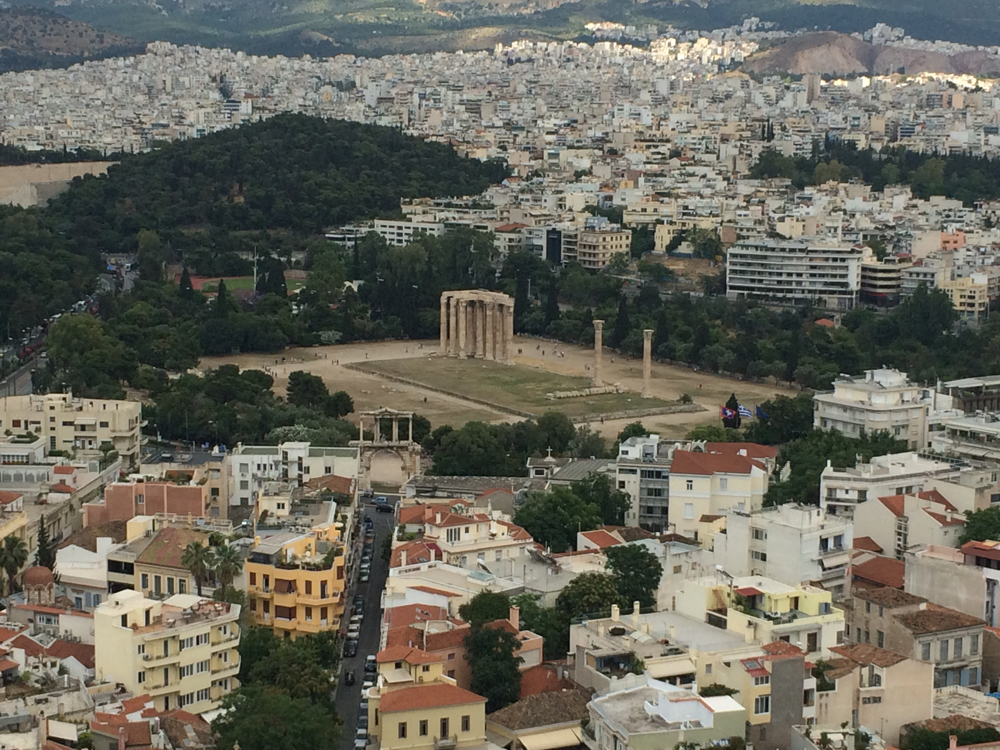
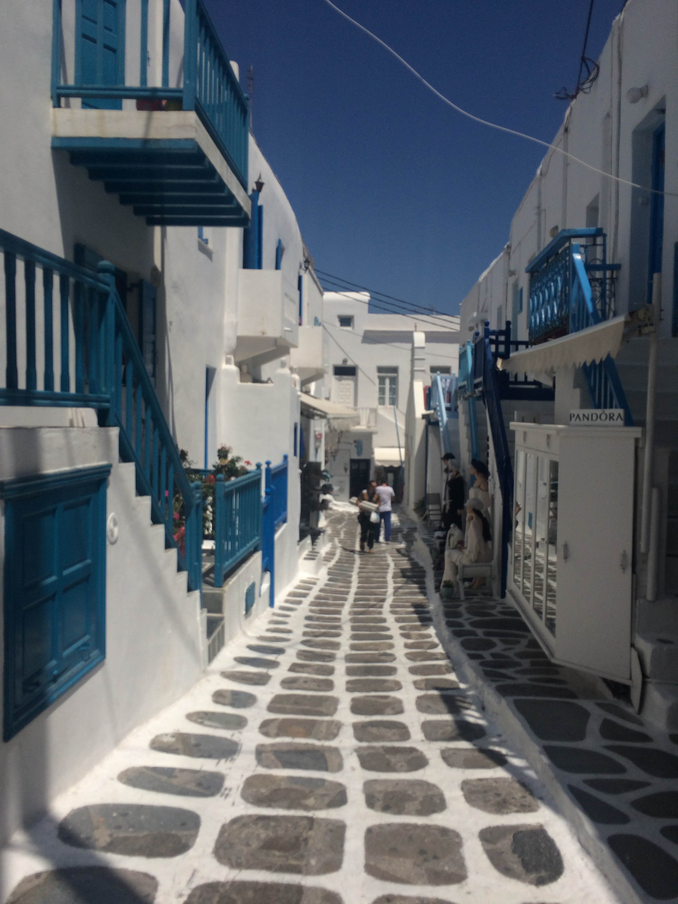
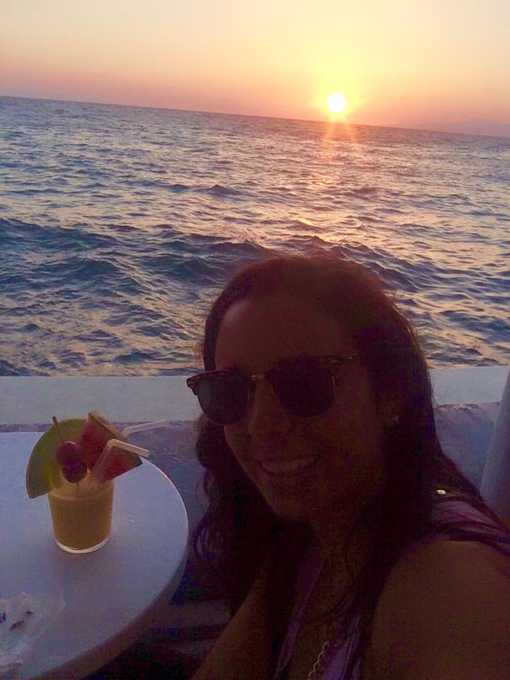

You only really need one day in Athens to hit the famous ruins and museums. The city was built around all of the ruins and it is awesome. Look up while you're strolling the streets of the city and you can see the Acropolis on top of hill!

HOW TO GET THERE
Generally you will fly into Athens airport (ATH) which is a big hub in Europe itself. The main Greek airline is Aegean airline. To get to the main area of Athens, there are three options: metro, bus and taxi.
The metro is the easiest and most efficient way. Line 3 goes directly into Athens. Just figure out which area you are staying for which stop to get off at and the metro will undoubetly go there. The metro leaves directly from the airport and runs every 30 minutes seven days a week and takes about 40 minutes to get to the main city and costs 8 euros.
There is an express bus route that connects directly to the city center and the airport seen days a week. It is a little more difficult as there are four different lines of busses that go to different areas of the city, so you have to make sure you get on the correct one. The bus takes around 60 minutes to the city center, however is dependent on traffic. The cost is 5 euros.
Otherwise, you can take a cab to the main city but it will cost you up 35 euros from 5AM to midnight and 50 euros from midnight to 5AM and will take about an hour, however is also dependent on traffic.
WHAT TO DO

Athens is known for the unbelievable archaelogical sites all around the city from thousands of years ago and it is truly a remarkable site. Of course you can stay longer and see every single site, but I think one day is enough in this city and you will get a feel for Athens life and be able to see various famous sites.
TIP: Watch out for gypsies, they are all over the city, and as I mentioned above, watch out for the crazy hosts at restaurants harassing you.
TIP: Buy the 12 Euro pass which gives entrance to ALL of the sites and is good for four days. The only site it does not include is the Acropolis Museum, which was an awesome museum so I suggest going too. If you have a student ID, this pass will be even cheaper and it is so worth it for ALL of the sites. You can buy this ticket at any of the sites kiosks you start at! All sites are within walking distance of each other and will be a long day so take water!
TIP: All archaeological sites are closed on Sundays and they all close around 3PM on other days besides the Acropolis which is open until 7PM. All sites open at 8 AM.

Main Sites To See:
- Acropolis: Most well-known archaelogical site in the world; a must-see. On top of the big hill in the middle of the city and visible anywhere in the city. Leave at least 1-2 hours to explore here on top.
- Acropolis Museum: Not included in the sites package, but one of my must-sees. Such a well-done museum to help give historic perspective. I suggest going here after visiting the Acropolis. It is located on the bottom of the slope. I also suggest having lunch at the cafe here outside, it provides an amazing view of the Acropolis.
- Ancient Agora: A well-preserved temple and should definitely be visited.
- Olympia Zeus: One of the largest ancient temples in the world.
- Library of Hadrian: Has an awesome museum in it, make sure to leave about an hour to visit here.
Other noteworthy archaelogical sites: Kerameikos, Roman Agora, North and South slope of Acropolis, Agora Museum and the Kerameikos Museum.
Non-Archaelogical Places to Visit with more time: Evzones Changing of the Guard, Zappeion GardensNational Gardens, Athens Flee Market, walk around Syntagma Square and Omonia square is pretty too!
WHAT TO EAT

Of course, Greek salad and gyros are what you think of when you hear Greek food and it does not disappoint here. While there are not so many noteworthy restaurants in Athens (as opposed to Santorini and Mykonos) there are some good areas to eat and things to try!
We ate breakfast at our hotel which was included each day. Otherwise, all around Syntagma square there are tons of stands and little shops with amazing gyros and little greek salads to eat. Make sure to eat lots of Feta cheese as it is unreal. A good vegetarian option is Avocado which is in Syntagma Square. Also Fisherman's Taverna which is near the Acropolis as well as Strofi Tavern which has unreal views of the Acropolis. There are tons of restaurants and they will all have amazing Greek food, try out your favorites and let me know your recommendations for my next visit!
WHERE TO STAY
I suggest staying in Syntagma Square if you want to be in the most central, crowded area of the city. However, we stayed in Omonia Square, a few minutes outside of Syntagma Square, since we didn't know, and it was perfectly great! We stayed at the cutest little hotel called Hotel Cosmopolit and it was so cute and great. It was beyond clean, the rooms were a decent size for two people, and the breakfast had a good amount of options and was included daily. Additionally the staff was all beyond nice and helped us in getting around the city. I would highly recommend Hotel Cosmopolit and the price is great for budget travelers who don't want to stay in a sketchy hostel.
WHERE TO PARTY
Unfortunately we did not go out in Athens as we had a very early flight the day earlier and were leaving super early the next day to get to our ferry for Mykonos. However, they do have a lively nightlife and some well-known DJs and artists come here to play. I suggest going out around the Gazi area which is lively at night!
OTHER HELPFUL TIPS: THE ATHENS PORTS
Athens is obviously known for a main Greece hub and the main city, and it is the way most people get to all of the hundreds of Greek islands from here through their ports as well. This is a little overview of the three Athens ports and how to get there.
Ports
- Piraeus: Main Athens port and largest in Greece. Can access by metro or bus. The green metro line takes 25 minutes and goes through Omonia square. Price is 1.40 euros. There is no direct bus to Piraeus port so we suggest the metro. A cab will take about 30 minutes from the center and will cost around 20 euros. Piraeus port serves most itineraries to the Greek islands
- Rafina: Second lasrgest port in Athens. It is the closest port to the airport. It provides access to some Cyclades islands (Tinos, Mykonos and Syros) as well as Evia and Andros. You can take abus from the city center to get there whcih takes abotu 70 minutes and costs 2.40 euros. We recommend this route. Althernatively you can take a taxi which wlil take 85 minutes and cost about 50 euros during hte day.
- Lavrio: smallest Athens ports and serves Eastern-Aegean islands and a few Cyclades islands. You can take a bus from the city center which will take about 2 hours and costs 4.90 euros or a cab which will take 85 minutes and cost 65 euros during the day.
Dubbed the "party island", I had to see what this place was about. I had high expectations going in, with my love for house music and little towns, and I was not disappointed...Not to mention the sunsets while sipping amazing cocktails.
NOTE: Most of these restaurants, beaches and clubs are only open during the summer months!
HOW TO GET THERE
We took a ferry from Athens to Mykonos which was super easy and quick. We took it from the Rafina port, which has more time options than Pireus. The ferry was about 2 hours with assigned seating, sort of like an airplane. It was a really interesting experience as well as affordable (around $60). You can also fly here from Athens and other select European countries.
WHAT TO DO

- Spend a full day in Chora (the main town) and get lost in the alleys. The whole town is tiny but you can easily get lost roaming these streets, eating amazing food, marveling at the all-white buildings and blue accents and shopping in the stores. I suggest spending your morning and early afternoon doing this and eating plenty of good meals and ice cream in between!

- One stop you must make is on the top of Chora at the windmills - it's an amazing site. 4 windmills line the hill and you can look over the water and edge of Chora together. This is the most famous view of Mykonos (look at any postcard and they will be on there!)
- When the afternoon starts to come to an end, make sure you head to the Little Venice area (part of the town on the border of the water). This area consists of tons of bars that overlook the sunset. It is the most stunning view...and the cocktails are amazing, but they will cost you. There are a myriad of bars to choose from, and I suggest picking wherever you can get a seat legitimately on the water. Don't you want your sunset pictures not to have people in it? We sat right on the border of the water, with many people behind us. We sat at Scarpa and the drinks were amazing. Galleraki is another great option right next door. The sunset is absolutely perfect.

- 
- Rent Scooters: Rent them for a day and ride around the island stopping at different areas like the locals do. There are many gorgeous beaches on the island that you can travel to on them. You can rent one from any beach or area in town.
- Beaches: If you are staying in town and not on a beach, I highly suggest going to check out and lay at one of the famous beaches in Mykonos. Some gorgeous ones are: Paradise Beach (a party one, but gorgeous) Psarrou (trendy, famous celebrity-heavy beach), Super Paradise (generally where gays like to party), Platis Gialos (close to town) and Paraga (one of most popular and crowded).
- Delos Island: While I didn't have time for this, I heard this day activity was amazing if you have more time in Mykonos. You can take a short ferry trip (30 minutes) to Delos Island which is known for its awesome archaelogical ruins.
WHAT TO EAT
We went to amazing places for dinners as well as sunset drinks (mentioned above)! All of these restaurants are located in Chora unless noted.
- Fato A Mano: Amazing for dinner and good prices. My favorite restaurant.
- Nikos Taverna: Traditional Greek food
- M-Eating: Another option for great traditional Greek food
- Raya: Cute little restaurant overlooking the old port in Chora. Good breakfast food!
- Nobu :If you are feeling fancy. In the Belvedere Hotel
- Avra Restaurant: Has a cute outdoor garden eating area.
- Nammos: This is on one of the beaches, Psarrou. We didn't go but it is one of the most famous (and nicest)restaurants and beaches. Go here for lunch. Not cheap though! This is the beach all of the famous celebrities tend to go to.
WHERE TO STAY
We stayed in Paradise Beach, where all the late-night (and daytime!) partying happens. There is a bus that goes straight into the main town and leaves every 30 minutes right from the hotel and only takes 15-20 minutes to get there, it was so convenient. While many other people would say to stay in the middle of town, I say otherwise if you are there to party. We much preferred to take a bus to and from town during the day as opposed to 2 AM from the club and back into town. Our hotel was called Tropicana Hotel and was absolutely PERFECT and was so gorgeous with the most beautiful view and balcony as well as walking distance to the party dayclub and nightclubs. The price was beyond cheap for what it was as well. Highly recommended.
If you are visiting Mykonos for the town only and no partying, then there are plenty of good hostels and small hotels located right in the middle of the town and I suggest staying there.
WHERE TO PARTY
Mykonos gives Ibiza a run for its money on the party scene. Even though I went in beginning of June, before "DJ season", it was still absurd. Generally the party area is on Paradise Beach. This is where the two biggest clubs are on the island, both making the top 20 clubs in the world, Cavo Paradise and Paradise Club, so I suggest going. They alternate nights so not to worry, you will go to both. These clubs hold the top DJs in the world during the summer, so they do not disappoint. They are down the street from each other, a quick 5 minutes walk.
The biggest and most famous day party club is also on the same road, the Tropicana Beach Club. Get here before 4PM, and it will be a casual gorgeous beach with amazing lounge chairs. But at the turn of 4, it does a 180 and gets beyond crazy with champagne showers, crazy drinks and dancing on the tables. See for yourself.
If you are staying in Chora and are not the club type, I suggest going to the trendy Skandinavian Bar!

Santorini surpasses Mykonos and any other place I have ever been on its beauty and I have never seen anything like it. It feels like you are in a picture and is truly unbelievable. The cities are on huge cliffs and the views are absolutely breathtaking.
HOW TO GET THERE
Like Mykonos, we took a ferry here which was quick (like 2 hours), easy and cheap ($55) as well as recommended. This ferry had an open deck and not assigned seating and the views were gorgeous! You can also fly here from Athens and other select European countries.
WHAT TO DO
The two main towns are Fira (Thira) and Oia. Fira is more residential with many hotels and nightlife and where we stayed and where I suggest staying. Oia is the sunset town, only way to describe it. Of course there are plenty of gorgeous apartments here as well, but not as much to do, and less central.
WHAT TO EAT
Typical Greek food, here are some recommendations in Fira we loved!
- Idol: Great breakfast and also sunset view!
- Aris: Greek food with an amazing view
- Apiron: Great sunset dinner view
- Corner Cafe: Amazing crepe place for the morning! On the main street on the way up into town
WHERE TO STAY
We stayed in Fira about a 2 minute walk from town. The hotel was called Golden Star and it was a perfect location and perfect budget hotel. The rooms were small but great for two people and they had a gorgeous pool in the back with views of the ocean as well